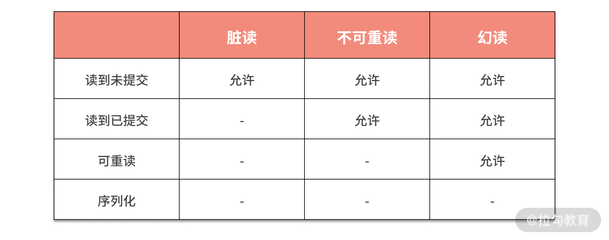

- 00 开篇词 吃透分布式数据库，提升职场竞争力.md.html
- 01 导论：什么是分布式数据库？聊聊它的前世今生.md.html
- 02 SQL vs NoSQL：一次搞清楚五花八门的“SQL”.md.html
- 03 数据分片：如何存储超大规模的数据？.md.html
- 04 数据复制：如何保证数据在分布式场景下的高可用？.md.html
- 05 一致性与 CAP 模型：为什么需要分布式一致性？.md.html
- 06 实践：设计一个最简单的分布式数据库.md.html
- 07 概要：什么是存储引擎，为什么需要了解它？.md.html
- 08 分布式索引：如何在集群中快速定位数据？.md.html
- 09 日志型存储：为什么选择它作为底层存储？.md.html
- 10 事务处理与恢复（上）：数据库崩溃后如何保证数据不丢失？.md.html
- 11 事务处理与恢复（下）：如何控制并发事务？.md.html
- 12 引擎拓展：解读当前流行的分布式存储引擎.md.html
- 13 概要：分布式系统都要解决哪些问题？.md.html
- 14 错误侦测：如何保证分布式系统稳定？.md.html
- 15 领导选举：如何在分布式系统内安全地协调操作？.md.html
- 16 再谈一致性：除了 CAP 之外的一致性模型还有哪些？.md.html
- 17 数据可靠传播：反熵理论如何帮助数据库可靠工作？.md.html
- 18 分布式事务（上）：除了 XA，还有哪些原子提交算法吗？.md.html
- 19 分布式事务（下）：Spanner 与 Calvin 的巅峰对决.md.html
- 20 共识算法：一次性说清楚 Paxos、Raft 等算法的区别.md.html
- 21 知识串讲：如何取得性能和可扩展性的平衡？.md.html
- 22 发展与局限：传统数据库在分布式领域的探索.md.html
- 23 数据库中间件：传统数据库向分布式数据库的过渡.md.html
- 24 现状解读：分布式数据库的最新发展情况.md.html
- 加餐1 概念解析：云原生、HTAP、图与内存数据库.md.html
- 加餐2 数据库选型：我们该用什么分布式数据库？.md.html
- 捐赠
11 事务处理与恢复（下）：如何控制并发事务？
上一讲，我们介绍了事务的基本概念和数据库恢复流程，其中涉及了事务持久性是如何保证的，那么这一讲，我们就重点介绍事务的隔离性。
数据库最强的隔离级别是序列化，它保证从事务的角度看自己是独占了所有资源的。但序列化性能较差，因此我们引入了多种隔离界别来提高性能。在本讲的最后我会介绍分布式数据库中常用的并发控制手段，它们是实现隔离级别的有效方案，其中以多版本方式实现快照隔离最为常见。
现在让我们开始今天的内容。
隔离级别
在谈隔离级别之前，我们先聊聊“序列化”（Serializability）的概念。
序列化的概念与事务调度（Schedule）密切相关。一个调度包含该事务的全部操作。我们可以用 CPU 调度理论来类比，当一个事务被调度后，它可以访问数据库系统的全部资源，同时会假设没有其他事务去影响数据库的状态。这就类似于一个进程被 CPU 调度，从而独占该 CPU 资源（这里的 CPU 指的是时分系统）。但是实际设计调度时，会允许调度事务内部的操作被重新排序，使它们可以并行执行。这些都是优化操作，但只要不违反 ACID 的原则和结果的正确性就可以了。
那什么是序列化呢？如果一个调度被说成是序列化的，指的是它与其他调度之间的关系：在该调度执行时没有其他被调度的事务并行执行。也就是说，调度是一个接着一个顺序执行的，前一个调度成功完成后，另一个调度再执行。这种方法的一个好处是执行结果比较好预测。但是，我们发现这种做法有明显的缺陷：性能太低。在实现时，一个序列化调度可能会并行执行多个事务操作，但是会保证这样与一个个顺序执行调度有相同的结果。
以上就是序列化的概念，它揭示了序列化也会存在并发执行的情况。这一点很重要，在隔离理论中，一个隔离概念只是描述了一种行为，而在实现层面可以有多种选择，只要保证这个行为的结果符合必要条件就没有问题了。
序列化是最强的事务隔离级别，它是非常完美的隔离状态，可以让并行运行的事务感知不到对方的存在，从而安心地进行自己的操作。但在实现数据库事务时，序列化存在实现难度大、性能差等问题。故数据库理论家提出了隔离级别的概念，用来进行不同程度的妥协。在详解隔离级别之前，来看看我们到底可以“妥协”什么。
这些“妥协”被称为读写异常（Anomalies）。读异常是大家比较熟悉的，有“脏读”“不可重读”和“幻读”。写异常不太为大家所知，分别是“丢失更新”“脏写”和“写偏序”。读异常和写异常是分别站在使用者和数据本身这两个角度去观察隔离性的，我们将成对介绍它们。传统上隔离级别是从读异常角度描述的，但是最近几年，一些论文也从写异常角度出发，希望你能明白两种表述方式之间是有联系的。下表就是经典隔离级别与读异常的关系。

从中可以看到序列化是不允许任何读写异常存在的。
可重读允许幻读的产生。幻读是事务里面读取一组数据后，再次读取这组数据会发现它们可能已经被修改了。幻读对应的写异常是写偏序。写偏序从写入角度发现，事务内读取一批数据进行修改，由于幻读的存在，造成最终修改的结果从整体上看违背了数据一致性约束。
读到已提交在可重读基础上放弃了不可重读。与幻读类似，但不可重读针对的是一条数据。也就是只读取一条数据，而后在同一个事务内，再读取它数据就变化了。
刚接触这个概念的同学可能会感觉匪夷所思，两者只相差一个数据量，就出现了两个隔离级别。这背后的原因是保证一条数据的难度要远远低于多条，也就是划分这两个级别，主要的考虑是背后的原理问题。而这个原理又牵扯出了性能与代价的问题。因此就像我在本专栏中反复阐述的一样，一些理论概念有其背后深刻的思考，你需要理解背后原理才能明白其中的奥义。不过不用担心，后面我会详细阐述它们之间实现的差别。
而不可重读对应的是丢失更新，与写偏序类似，丢失更新是多个事务操作一条数据造成的。
最低的隔离级别就是读到未提交，它允许脏读的产生。脏读比较简单，它描述了事务可以读到其他事务为提交的数据，我们可以理解为完全没有隔离性。而脏读本身也会造成写异常：脏写。脏写就是由于读到未提交的数据而造成的写异常。
以上，我们详细阐述了经典的隔离级别。但是这套理论是非常古早的，较新的 MVCC 多版本技术所带来的快照隔离又为传统隔离级别增添一个灵活选型。它可以被理解为可重读隔离级别，也就是不允许不可重读。但是在可重读隔离下，是可以保证读取不到数据被修改的。但快照隔离的行为是：一旦读到曾经读过的数据被修改，将立即终止当前事务，也就是进行回滚操作。在多并发事务下，也就是只有一个会成功。你可以细细品味两者的差异。
快照隔离可以解决丢失更新的问题，因为针对同一条数据可以做快照检测，从而发现数据被修改，但是不能防止写偏序的问题。
快照隔离是现代分布式数据库存储引擎最常使用的隔离级别，而解决写偏序问题，也是存储引擎在该隔离级别下需要解决的问题。SSI（Serializable Snaphost Isoltion）正是解决这个问题的方案，我会在“18 | 分布式事务：‘老大难’问题的最新研究与实践”中详细介绍该方案。
至此我们讨论了典型的隔离级别，隔离级别与分布式一致性的关系我在“<05 | 一致性与 CAP 模型：为什么需要分布式一致性>”中已经有过阐述，如果需要复习，请出门左转。现在让我们接着讨论如何实现这些隔离级别。
并发控制
目前存储引擎引入多种并发模型来实现上面提到的隔离级别，不同的模式对实现不同的级别是有偏好的，虽然理论上每种控制模型都可以实现所有级别。下面我就从乐观与悲观、多版本、基于锁的控制三个方面进行介绍。
乐观与悲观
乐观与悲观的概念类似于并发编程中的乐观锁与悲观锁。但是这里你要注意，实现它们并不一定要借助锁管理。
乐观控制使用的场景是并行事务不太多的情况，也就是只需要很少的时间来解决冲突。那么在这种情况下，就可以使用一些冲突解决手段来实现隔离级别。最常用的方案是进行提交前冲突检查。
冲突检查有多种实现模式，比如最常用的多版本模式。而另一种古老的模式需要检查并行事务直接操作的数据，也就是观察它们操作的数据是否有重合。由于其性能非常差，已经很少出现在现代存储引擎中了。这里需要你注意的是，乐观控制不一定就是多版本这一种实现，还有其他更多的选择。
同样的，悲观控制也不仅仅只有锁这一种方案。一种可能的无锁实现是首先设置两个全局时间戳，最大读取时间与最大写入时间。如果一个读取操作发生的时间小于最大写入时间，那么该操作所在的事务被认为应该终止，因为读到的很可能是旧数据。而一个写操作如果小于最大读取时间，也被认为是异常操作，因为刚刚已经有读取操作发生了，当前事务就不能去修改数据了。而这两个值是随着写入和读取操作而更新的。这个悲观控制被称为 Thomas Write Rule，对此有兴趣的话你可以自行搜索学习。
虽然乐观与悲观分别有多种实现方案，但乐观控制最为常见的实现是多版本控制，而悲观控制最常见的就是锁控制。下面我就详细介绍它们。
多版本
多版本并发控制（MVCC，Multiversion concurrency control）是一种实现乐观控制的经典模式。它将每行数据设置一个版本号，且使用一个单调递增的版本号生成器来产生这些版本号，从而保证每条记录的版本号是唯一的。同时给每个事物分为一个 ID 或时间戳，从而保证读取操作可以读到事务提交之前的旧值。
MVCC 需要区分提交版本与未提交版本。最近一次提交的版本被认为是当前版本，从而可以被所有事务读取出来。而根据隔离级别的不同，读取操作能或者不能读取到未提交的版本。
使用 MVCC 最经典的用法是实现快照隔离。事务开始的时候，记录当前时间，而后该事务内所有的读取操作只能读到当前提交版本小于事务开始时间的数据，而未提交的数据和提交版本大于事务开始时间点的数据是不能读取出来的。如果事务读取的数据已经被其他事务修改，那么该数据应该在上一讲提到的 undo log 中，当前事务还是能够读取到这份数据的。故 undo log 的数据不能在事务提交的时候就清除掉，因为很可能有另外的事务正在读取它。
而当事务提交的时候，数据其实已经写入完成。只需要将版本状态从未提交版本改为提交版本即可。所以 MVCC 中的提交操作是非常快的，这点会对分布式事务有很多启示。
而上文提到的 SSI 模式可以在 MVCC 的基础上引入冲突解决机制，从而解决写偏序问题。当提交发生的时候，事务会检测其修改和读取的数据在提交之前是否已经被其他已提交事务修改了，如果是，则会终止当前事务，并进行回滚。同时这个冲突检测时机会有两个：一个是在事务内进行读取操作时就进行检测，称为前向检测（forward）。而相对的，在提交时进行检测被称为后向检测（backward）。你会明显感觉到，前者会快速失败，但是性能较低；而后者对异常的反应较慢，但速度会有优势。
这就是经典的 MVCC 并发控制，现在让我接着介绍典型的悲观控制：锁控制。
基于锁的控制
基于锁的控制是典型的悲观控制。它会使用显示的锁来控制共享资源，而不是通过调度手段来实现。锁控制可以很容易实现“序列化操作”，但是它同时存在锁竞争和难扩展等问题。
一个比较知名的锁技术是两阶段锁（2PL），它将锁操作总结为两个阶段。
- 锁膨胀阶段。在该过程中，事务逐步获得所有它需要的锁，同时不释放任何锁。这期间事务可以对加锁的数据进行操作。
- 锁收缩阶段。该过程中，在上一过程中获得的锁全部被释放。这个事务是逐步的，这期间事务依然可以对还持有锁的数据进行操作。
以上过程简单明了，它是针对一次性加锁提出来的，一次性加锁的缺点是没有并发度，性能低；而两阶段锁可以保证一定的并发度，但其缺点是会有死锁的产生。
死锁是两个事务互相持有对方的锁，从而造成它们都无法继续运行。解决死锁需要引入超时机制，但超时机制又有明显的性能缺憾。此时，人们会引入死锁检测机制来尽早发现死锁。一般实现手段是将所有事务的锁依赖构建成一棵依赖图，而后使用图算法来发现其中的环形死锁结构，从而快速判断死锁的产生。
而与锁相对的一个概念就是“闩”（latch，读“shuān”）。一般资料说闩是轻量的，锁是重量的，这其实体现在两个方面。
一是说它们处理的对象。闩一般用在粒度很小的数据中，比如数据块、索引树的节点等。而锁一般作用在大颗粒操作，如锁定多行数据、事务和修改存储结构等。
二是它们本身的实现不同。闩一般使用 CAS 执行，是基于比较而后设置的无锁指令级别的操作。如果原始值发生变化就重新进行以上操作，这个过程叫自旋（spin）。而锁是使用独立的资源，且有锁管理器来控制。可想而知，调度锁也是一个比较耗时且复杂的过程。
这里就要解释上文中隔离级别“序列化”和“可重读”之间实现的差异了。“序列化”由于要保证一组数据重复读取的一致性，就需要引入重量级的锁，其代价是很高的；而“可重读”只需要保证一行数据重复读取是一致的，它可以使用轻量级的闩来实现。故隔离级别将它们分成两种是非常合理的，因为从原理看，它们是完全不同的。
以上就是关于基于锁的控制的相关内容。
总结
本讲内容就介绍到这里了。事务是我们课程到目前为止最长的内容，用了两讲的篇幅来详细介绍。事务的话题在数据库领域一直很热门，我从事务原理层面切入，解释了 ACID 和不同隔离级别所需要的技术手段。这些内容为分布式事务的学习打下坚实的基础，同时你可以将本专栏作为一份参考资料，随时进行查阅。
从本质出发，事务是一个面向使用者的概念，它向使用者提供一种契约，目的是使人们可以可靠地使用数据库保存和共享数据，这是数据库最核心的功能，且有众多的应用是基于该功能构建的，这也是分布式数据库为什么要实现分布式条件下的事务的根本原因。
© 2019 - 2023 Liangliang Lee. Powered by gin and hexo-theme-book.